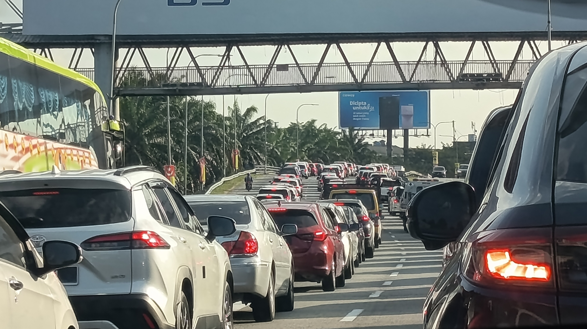

第 18 章论一块大石头与一千颗小石子的区别（On the Difference Between a Large Stone and a Thousand Pebbles）
主要思想
- 凸性与凹性：被一块大石头砸一次是重伤，被等重的小石子砸一千次却基本无害——伤害随冲击规模非线性放大。曲线外凸（微笑）即反脆弱，内凹（噘嘴）即脆弱，两者只是同一条非线性曲线的两副面孔。
- 规模致脆（size fragilizes）：越庞大的系统（巨头机构、超大城市、超大水坝）对非线性冲击越敏感。规模带来的收益看得见，隐藏的风险却随体量不成比例地增长，"忍痛"成本尤其如此。
- 效率的代价：追求极致效率＝消灭冗余＝制造脆弱。压榨备余产能的系统平时运转顺畅，稍有扰动便会滚雪球式失控，且错误只朝一个方向放大。
- 无需概率即可识别脆弱：只需问一句"冲击加倍，伤害是否超过加倍"，画出响应曲线或做压力测试，就能察觉脆弱，而不必费力计算概率。
原文引用
对脆弱的东西来说，小震撼所造成的累积影响，低于等量的单一大震撼所造成的单一影响。
这句话一语道破本章核心：脆弱不在于冲击的次数或概率，而在于伤害对冲击规模的非线性放大。
忍痛会因为规模而恶化。体积大的东西，面对某些错误容易受到伤害，尤其是在巨大的忍痛情况发生时。随着规模增加，忍痛的成本会成非线性增加。
它直接支撑"规模致脆"：庞然大物在被迫不计代价行动时，付出的是不成比例的代价——养一头大象当宠物，远比养猫养狗危险。
于是现代经济追求优化的生活，使我们盖起愈来愈大的戏院，却还是只安装相同的门。
一句比喻点破效率的悖论：容量不断扩张而出口（冗余）不变，瓶颈正是所有"忍痛"成本之源。
经济可能变得愈来愈有"效率"，但脆弱性使得错误的成本变得更高。
它印证了效率的代价：优化省下的钱，最终会以更惨烈的灾难成本偿还。
生活案例
高峰期的最后一辆车

高速公路一旦接近饱和，车流再增一成，通行时间可能暴增五成；塔勒布本人就因纽约临时封闭一座桥供电影公司拍摄，平时四十分钟的车程走了数小时。解读：交通成本对车流的波动而非平均数敏感，把道路优化到极限运行，就等于消灭了吸收冲击的冗余。
越大的公司，越怕断链
奉行零库存的巨型制造企业依赖单一供应商与单一物流枢纽，一旦芯片断供、港口拥堵便全线停产；书中对照鲜明：一家大银行被迫贱卖七百亿美元股票、巨亏六十亿，若是十家小银行各自承担十分之一，总损失将接近零。解读：规模经济的收益看得见，"忍痛"成本却随规模非线性攀升——这正是规模致脆，也是分散供应、保留冗余的价值所在。
举铁与加班的两种曲线
健身房里一次举起一百磅对肌肉的刺激，远胜一百次举起一磅；同样花二十分钟，六分钟全力跑完一英里也比全程慢走获益更多。反观"996"式加班：低强度消耗长期叠加，偶发的大冲击接踵而至，却始终没有恢复期，身体正被推向凹性一端。解读：健康收益对强度呈凸性，运动就是主动利用凸性效应；持续高压而无恢复，则把系统悄悄改造成脆弱的形状。
本质：脆弱不是概率问题，而是响应曲线的形状问题（凹性）——它可以用图形与压力测试识别，而不必计算概率；与其徒劳地预测黑天鹅，不如去改变曲线的形状。
第 19 章哲人石及其反面（The Philosopher's Stone and Its Inverse）
主要思想
- 脆弱性察觉启发法：不必预测未来，只需对假设做一点扰动，看结果的二阶效应——伤害是否随偏离加速扩大。"曲线向哪个方向弯"比"事件发生概率有多大"更能说明问题。
- 房利美（Fannie Mae）案例：账面平静、股价尚在上涨，内部风险报告却显示其暴露曲线严重凹性——亏损随波动加速累积。塔勒布断言它"坐在一桶炸药上"，最终果然崩盘，纳税人损失数千亿美元。
- 詹森不等式的含义：凸性把无知转化为朋友，凹性把无知转化为敌人——越不确定，越要站在凸的一侧。这正是章名"点金石与反点金石"的数学内核。
- 平均数会骗人：对波动脆弱的事物，平均值毫无意义，围绕均值的离散程度才是关键——就像祖母的健康面对"平均七十度"的温度。
原文引用
很简单，某个经济变数向上，房利美会发生庞大的亏损，（往反方向）向下则只有小额的利润。再向上，额外的亏损会更大，再向下，利润更小。……我甚至不需要知道哪种经济变数，因为对一种变数呈现这么大的脆弱性，表示对其他所有的参数也呈现脆弱性。
——这条不对称的损益结构，正是"看曲线弯向哪边"就能察觉脆弱性的直接示范。
假设你衡量行经那座城镇的汽车增加一万辆时，通车时间多出十分钟。如果再增加一万辆，通车时间多出三十分钟。通车时间加速增加，显示交通呈现脆弱性。
——扰动系统、观察后果是否加速恶化，这套启发法不需要任何概率模型，人人可用。
当一个人面对变异显得脆弱，平均数的概念便不重要——这个时候，温度可能的离散情形，重要性大得多。
——它解释了为何盯着"平均值"的风险报告会漏掉真正的杀手：波动本身。
拥有线性报偿的人，需要有五〇％的次数正确。拥有凸性报偿的人，需要的正确次数则少得多。……你可以猜得比随机要差，最后的表现却仍然超前。
——这就是"越不确定越要站在凸的一侧"的算术依据：凸性给你犯错的权利。
生活案例
三成首付的房贷，是放大器而非资产
按"月供占收入一半"的上限贷款买房，隐含假设是收入永远稳定增长。做个扰动测试：收入降两成、利率上浮一点，还款压力不是线性增加，而是急速放大——断供、失信接踵而来。书中说得直白：脆弱公司涨一成赚到的利润，抵不上跌一成亏掉的金额。先问"下行一成会怎样"，再决定杠杆加多高。
期权式的职业选择
把十年光阴全部押在单一岗位、单一行业上，等于要求自己每次都押对方向，行业逻辑一变，积累便大幅贬值。更好的结构是"下有保底、上不封顶"：保留一份稳定现金流，同时用低成本方式不断试错——副业、跨领域项目、新技能。凸性的职业允许你九次试错、一次成功，照样领先。
给投资组合做体检
不必预测明年是牛是熊，只需问两个扰动问题：市场跌三成时我亏多少？亏损的速度是否超过市场——杠杆与重仓都会让曲线更凹。若答案令人心慌，说明手里握的是"反点金石"：应把大注放在下有保底处，用小额、多方向、可随时止损的仓位去拥抱波动。
本质：不计算事件的概率，而检测暴露曲线的弯曲方向——凸性把无知变成朋友，凹性把无知变成敌人。这套方法把风险管理从"不可能的预测"变成"人人可做的体检"：轻轻扰动一下，看看伤害会不会加速。